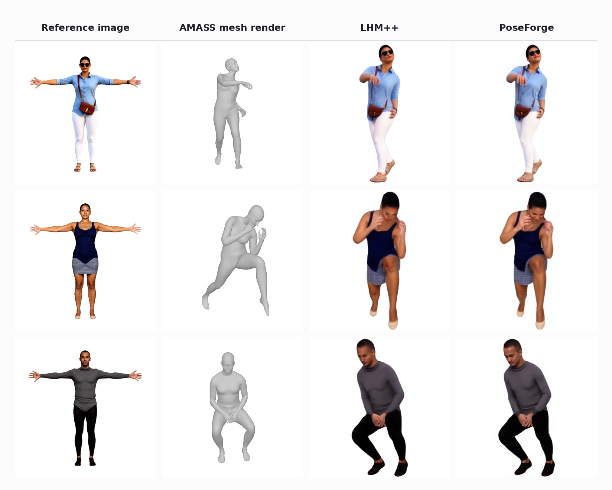
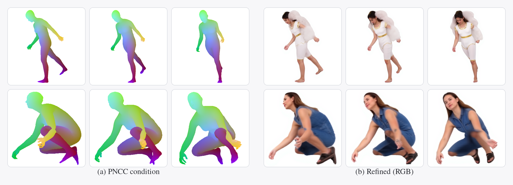
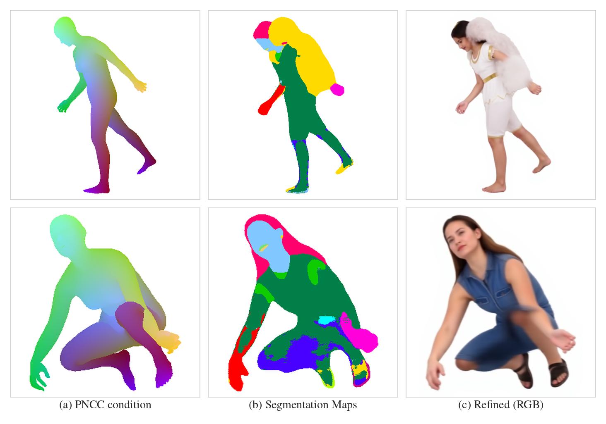
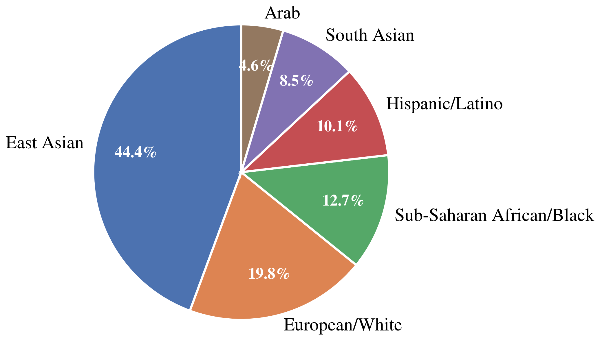
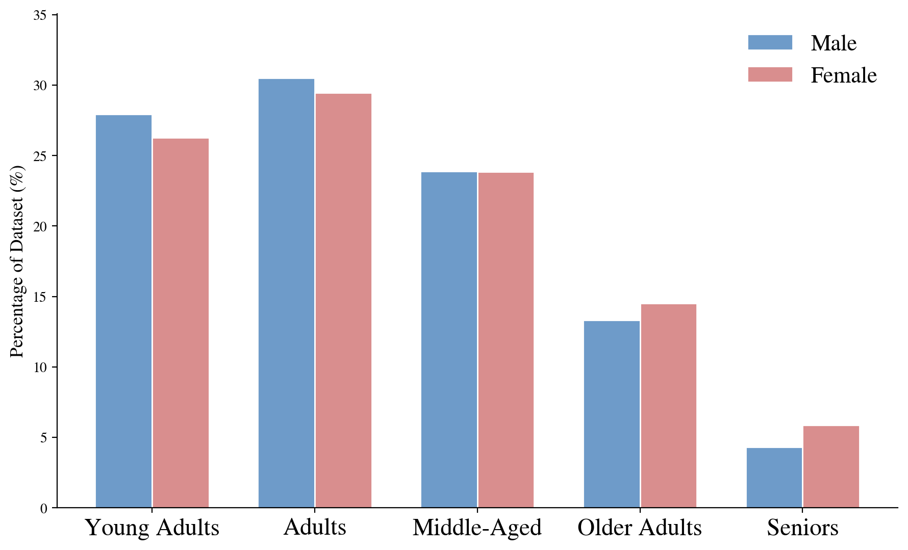
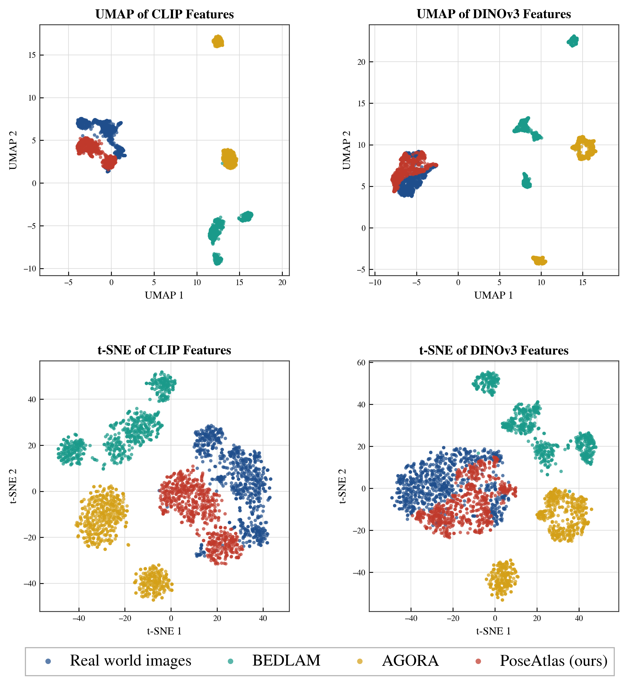

A Multi-View Synthetic Human Dataset with Geometrically Grounded Poses for 3D Pose Estimation

Existing real-world human pose datasets provide limited diversity in identities, poses, and multi-view observations, constraining the variability available for training robust 2D and 3D pose estimation models. PoseAtlas addresses this challenge through a geometry-grounded synthetic human dataset generation pipeline that provides diverse identities with poses sampled from motion-capture data. Each identity is instantiated as a 3D avatar, posed and rendered from multiple calibrated viewpoints by a feed-forward human reconstruction model. The resulting renderings are refined by a dual spatial-control flow-matching model that improves visual realism while conditioning on projected avatar geometry and body-part segmentation. Reinforcement learning further promotes both pose consistency and perceptual quality. The generated dataset contains more than 1,000,000 images from 48K synthesized identities across eight calibrated viewpoints. Each image is paired with SMPL-X annotations derived directly from the underlying 3D geometry. Evaluation with independent 2D pose estimators demonstrates that the underlying geometry remains recoverable from the generated images, while training under the SMPLer-X benchmark protocol shows that PoseAtlas transfers as training data. PoseAtlas also achieves strong visual quality compared to other synthetic human datasets.

Calibrated multi-view PNCC geometry and refined RGB renders sharing a common 3D reference.

Dual spatial control: PNCC geometry + body-part segmentation condition the refinement stage.
| Property | Value |
|---|---|
| Total images | 1,000,120 |
| Synthesized identities | 47,625 |
| Calibrated viewpoints per pose | 8 |
| Image resolution | 1024 × 2048 |
| Annotations | SMPL-X parameters + camera calibration, from 3D geometry |


Identity diversity across the synthesized population (ethnicity, age).

Visual comparison against existing synthetic human dataset baselines.
Fine-grained facial identity is less stable across views than body geometry, pose, and clothing, since body geometry is explicitly shared via SMPL-X while facial appearance is reconstructed independently per view. PoseAtlas currently focuses on single-person scenes and does not model multi-person interaction, overlap, or occlusion.
The PoseAtlas dataset and generation code will be released for non-commercial research use upon publication, including rendered images, SMPL-X parameters, camera parameters, identity/pose manifests, and an accompanying datasheet. This page will be updated with the dataset and repository links.
@inproceedings{poseatlas2027,
title = {PoseAtlas: A Multi-View Synthetic Human Dataset with Geometrically Grounded Poses for 3D Pose Estimation},
author = {PoseAtlas Authors},
booktitle = {Proceedings of the IEEE/CVF Winter Conference on Applications of Computer Vision (WACV)},
year = {2027}
}